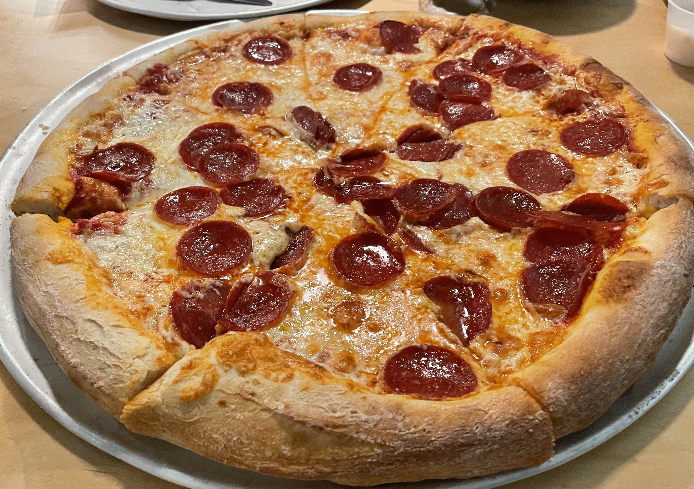

Back
Pepperoni Pizza

Description: Make a 12-inch pie of fresh pepperoni pizza
Equipment required:
- A conventional cooking-oven and heat-resistant glove
- Cheese grater
- Cutting board and decently-sized knife
- Pizza-cutter
- Pizza pan at least 12 inches wide
- Small rubber brush
Ingredients:
- 12-inch pizza crust
- Mozarella cheese (block or shredded)
- Pepperoni sausage (full or sliced)
- Tomato sauce
Once you have your ingredients and cooking items, it's time to prepare your workspace and ingredients
Ingredient preparation:
- Wash your hands
- If your cheese isn't shredded, then use the cheese grater to shred it
- If your pepperoni sausage isn't sliced, then cut it into 12-16 thin slices
- Lay the pizza crust onto your pizza pan
- Pour some sauce onto the crust and use your brush to evenly distribute it
- Sprinkle shredded cheese across the pizza, making sure to cover most of the sauce
- Lay out your pepperonis across the top of the pizza, evenly spaced
- Pre-heat the oven to 350 degrees Fahrenheit
After preparing, it is time to begin cooking.
- Using your heat-glove, place the pizza pan on the middle grate in the oven
- Every few minutes, check on the pizza as it cooks
- Once either the cheese is entirely melted or the outer crust becomes crunchy, turn off the oven
- After sitting for roughly 30 seconds, carefully pull the pizza pan out
- Let it cool for a few minutes, and then use your pizza cutter to divide the pizza into 6-8 even slices
- Enjoy!